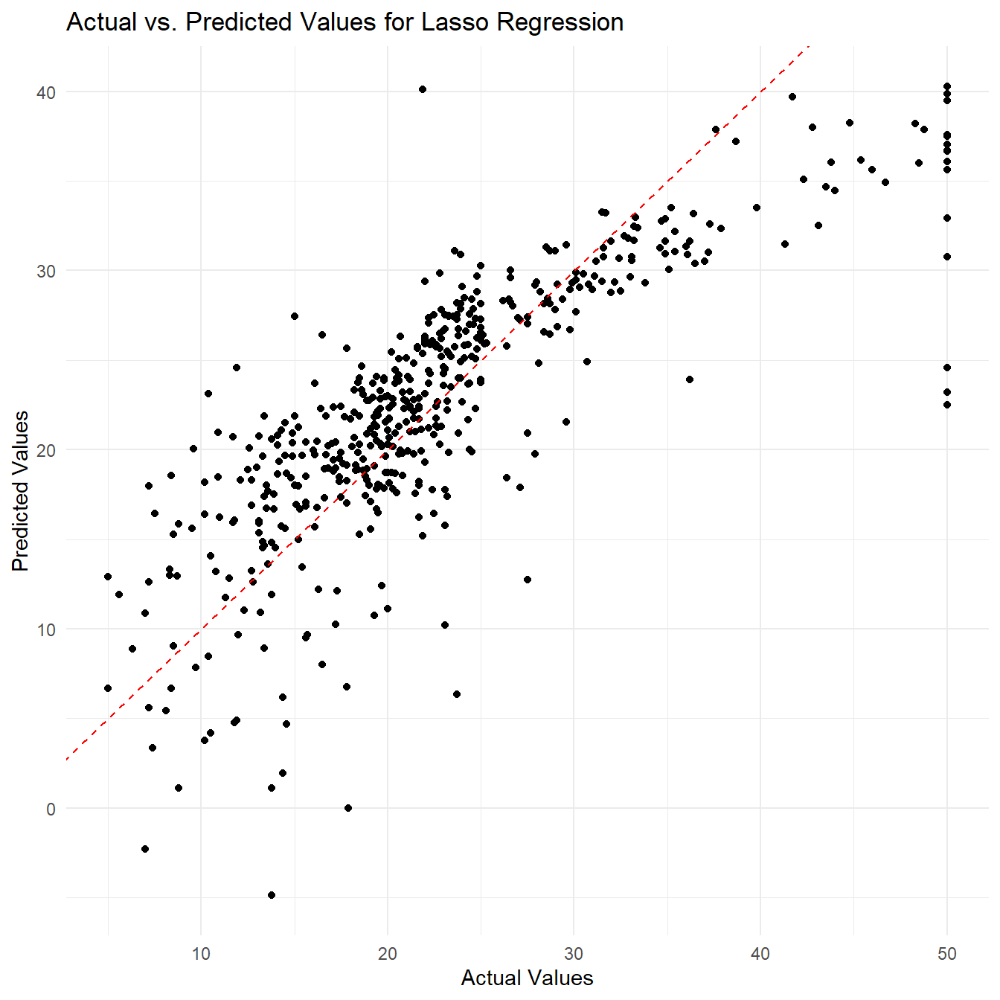

rRegressor Package
Regression Models for Supervised Learning
rRegressor_vignette.RmdCelline Williem 120040005 Darren Boesono 120040022 Jefferson Joseph 120040023
rRegressor is a package containing several flexible and simple regression models for supervised learning. With rRegressor, you can easily fit linear, polynomial, ridge, lasso, and k-nearest neighbor regression models, as well as generate predictions and calculate Mean Squared Errors (MSE). This package also contains functions to compare regression models based on their MSE. The package also provides functions to plot the correlation between actual value and predicted value and plot the correlation between all variables of the data.
rRegressor is built with efficiency and flexibility in mind, allowing you to fit models with custom parameters. With its clear and concise documentation and intuitive API, rRegressor is designed to be user-friendly and accessible to all levels of R users. Whether you’re working on a small-scale project or a large-scale data analysis, rRegressor provides the tools you need to get the job done quickly and accurately. We hope that this vignette will help you get started with rRegressor and unleash the full power of regression analysis in R.
Package Installation
To install rRegressor, you can use the
install.packages() function in R. However, since the
package is in tar.gz file format, you will need to specify the path to
the file using the repos = NULL argument. Here’s an example of how to
install rRegressor:
install.packages("/path/to/rRegressor_0.1.0.tar.gz", repos = NULL, type = "source")Note that you will need to replace “/path/to/” with the actual path to the rRegressor package on your local machine.
Load Package
To use rRegressor, you first need to load the library into your R session using the library() function. Here’s an example:
library(rRegressor)Once you’ve loaded the library, you can start using the functions it provides. In the next section, we’ll take a closer look at the various regression functions that rRegressor provides, and how to use them to fit and evaluate regression models.
Load dataset
One of the datasets included in rRegressor is the Boston dataset, which contains information about housing values in suburbs of Boston. To load this dataset, you can simply call the Boston function in R:
data("boston_df")This will load the Boston dataset into your R session as a data frame
named boston_df.
The Boston dataset contains the following variables:
-
crim: per capita crime rate by town -
zn: proportion of residential land zoned for lots over 25,000 sq.ft. -
indus: proportion of non-retail business acres per town -
chas: Charles River dummy variable (1 if tract bounds river; 0 otherwise) -
nox: nitric oxides concentration (parts per 10 million) -
rm: average number of rooms per dwelling -
age: proportion of owner-occupied units built prior to 1940 -
dis: weighted distances to five Boston employment centers -
rad: index of accessibility to radial highways -
tax: full-value property-tax rate per $10,000 -
ptratio: pupil-teacher ratio by town -
black: 1000(Bk - 0.63)^2 where Bk is the proportion of blacks by town -
lstat: lower status of the population (percent) -
medv: median value of owner-occupied homes in $1000s
Here’s an example for using the dataset:
head(boston_df)## crim zn indus chas nox rm age dis rad tax ptratio black lstat
## 1 0.00632 18 2.31 0 0.538 6.575 65.2 4.0900 1 296 15.3 396.90 4.98
## 2 0.02731 0 7.07 0 0.469 6.421 78.9 4.9671 2 242 17.8 396.90 9.14
## 3 0.02729 0 7.07 0 0.469 7.185 61.1 4.9671 2 242 17.8 392.83 4.03
## 4 0.03237 0 2.18 0 0.458 6.998 45.8 6.0622 3 222 18.7 394.63 2.94
## 5 0.06905 0 2.18 0 0.458 7.147 54.2 6.0622 3 222 18.7 396.90 5.33
## 6 0.02985 0 2.18 0 0.458 6.430 58.7 6.0622 3 222 18.7 394.12 5.21
## medv
## 1 24.0
## 2 21.6
## 3 34.7
## 4 33.4
## 5 36.2
## 6 28.7Data Exploration using Correlation Matrix
Create Correlation Matrix using
plot_correlation_matrix()
The plot_correlation_matrix function in rRegressor is a useful tool for exploring the pairwise correlations between variables in a dataset. By visualizing the correlation matrix using a color-coded plot, you can quickly identify which variables are positively or negatively correlated, and to what degree.
Understanding the correlations between variables in your dataset can help you to identify potential relationships that may be useful for building regression models. Before fitting and predicting regression models, it’s often a good idea to explore the correlations in your dataset using a function like plot_correlation_matrix. This can help you to identify potential multicollinearity issues (where two or more variables are highly correlated), which can make it difficult to interpret the coefficients of your regression models.
Parameters
The plot_correlation_matrix function takes three parameters:
-
data: A data frame containing the variables to plot correlations for. -
title: The title to use for the plot. -
size_coercoef: The size of the correlation coefficients displayed in the plot. By default, this is set to 0.5.
Loading the ‘corrplot’ Package
The plot_correlation_matrix function relies on the corrplot
package to generate the correlation matrix plot. If the
corrplot package is not already installed, the function will
automatically install it using the install.packages()
Example
Here’s an example of how to use the
plot_correlation_matrix() with the Boston dataset:
boston_df %>%
plot_correlation_matrix(.,title = "Boston Housing Dataset Correlation Matrix",
size_coercoef = 0.7)
This will generate a color-coded plot of the correlation matrix for the Boston dataset, with the correlation coefficients displayed in the lower triangle of the plot. You can use this plot to explore the relationships between the variables in the dataset and identify potential predictors for your regression models.
Regression Models
1. Linear Regression
Linear regression is a commonly used statistical technique for modeling the relationship between a response variable and one or more predictor variables. In simple linear regression, we model the relationship between a single predictor variable and a response variable using the following equation: \[y = \beta_0 + \beta_1 x + \epsilon\]
where \(y\) is the response variable, \(x_1\) is the predictor variable, \(\beta_0\) is the intercept term, \(\beta_1\) is the slope coefficient, and \(\epsilon\) is the error term. The goal of linear regression is to estimate the values of the intercept and slope coefficients that minimize the sum of squared errors between the predicted values and the actual values of the response variable.
In multiple linear regression, we extend this concept to include multiple predictor variables, using the following equation: \[y = \beta_0 + \beta_1 x_1 + \beta_2 x_2 + \cdots + \beta_p x_p + \epsilon\]
where \(y\) is the response variable, \(x_1, x_2, \dots, x_p\) are the predictor variables, \(\beta_0\) is the intercept term, \(\beta_1, \beta_2, \dots, \beta_p\) are the slope coefficients, and \(\epsilon\) is the error term.
Fit a Linear Regression Model with
fit_linear_regression()
The fit_linear_regression function in rRegressor is a tool for fitting a simple linear regression model to a dataset. It uses the normal equation to calculate the coefficients that minimize the sum of squared errors between the predicted values and the actual values of the response variable. The normal equation is given by: \[\beta = (X^TX)^{-1}X^Ty\]
where \(\beta\) is the vector of slope coefficients, \(X\) is the design matrix consisting of the predictor variables (with an optional intercept term), and \(y\) is the vector of response variable values.
After calculating the slope coefficients,
fit_linear_regression() uses them to calculate the fitted
values for the response variable, using the equation: \[\hat{y} = X\beta\]
where \(\hat{y}\) is the vector of fitted values for the response variable, \(X\) is the design matrix consisting of the predictor variables (with an optional intercept term), and \(\beta\) is the vector of slope coefficients.
Parameters
The fit_linear_regression function takes four parameters:
-
data: A data frame containing the predictor and response variables. -
x_vars: A character vector of variable names to be used as predictors. -
y_var: A character string of the variable name to be used as the response variable. -
intercept: A logical value indicating whether to include an intercept term in the model. The default value is TRUE.
Output
The fit_linear_regression function returns a list containing the following elements:
-
model: A list containing the slope coefficients and residuals for the linear regression model. -
fitted_values: A vector of the fitted values for the response variable.
Example
Here’s an example of how to use the
fit_linear_regression function with the Boston
dataset:
# Fit a linear regression model
lm_fit <- boston_df[1:10,] %>% fit_linear_regression(., x_vars = c("age", "rm", "lstat"),
y_var = "medv")
# Display the model object
lm_fit$model## $coefficients
## medv
## -53.6997418
## age -0.1332504
## rm 13.2566640
## lstat 0.3618399
##
## $residuals
## medv
## 1 -2.5768622
## 2 -2.6150599
## 3 -0.1660058
## 4 -0.6313349
## 5 0.4479279
## 6 3.0960035
## 7 1.2774826
## 8 4.8557381
## 9 -1.9533649
## 10 -1.7345244
# Display the fitted values
lm_fit$fitted_values## medv
## 1 26.57686
## 2 24.21506
## 3 34.86601
## 4 34.03133
## 5 35.75207
## 6 25.60400
## 7 21.62252
## 8 22.24426
## 9 18.45336
## 10 20.63452This shows that the fit_linear_regression function has
successfully fit a linear regression model to the Boston
dataset, with age, rm, and lstat as the predictor variable
and medv as the response variable. The model object and
fitted values are displayed as output in the R Markdown document.
Predict a Linear Regression Model with
predict_linear_regression()
The predict_linear_regression function uses the fitted model obtained from the fit_linear_regression function to predict the response variable using the predictor variables in the data parameter. The predicted values are calculated using the following equation: \[\hat{y} = X\beta\]
where \(\hat{y}\) is the vector of predicted values for the response variable, \(X\) is the design matrix consisting of the predictor variables (with an optional intercept term), and \(\beta\) is the vector of slope coefficients obtained from the ‘lm_fit’ parameter.
Parameters
-
data: a data frame containing the feature variables. -
lm_fit: a list containing the model object and fitted values obtained from the fit_linear_regression function. -
x_vars: a character vector of variable names to be used as predictors. -
intercept: a logical value indicating whether to include an intercept term in the model.
Example
Here’s an example of how to use the
predict_linear_regression function with the
Boston dataset:
# Fit and predict a linear regression model
lm_pred = boston_df[1:10,] %>% fit_linear_regression(.,
x_vars = c("age","rm","lstat"),
y_var = "medv") %>%
predict_linear_regression(data = boston_df[40:50,],
lm_fit = .,
x_vars = c("age","rm","lstat"))
#Display the predicted values
lm_pred## medv
## 40 32.38625
## 41 38.02615
## 42 37.41275
## 43 29.30346
## 44 30.46336
## 45 24.88051
## 46 20.81515
## 47 23.68611
## 48 21.64763
## 49 16.32251
## 50 18.164372. Ridge Regression
Ridge regression is a regularized version of linear regression that shrinks the regression coefficients towards zero to avoid overfitting. The objective function of Ridge regression is as follows: \[\min_{\beta_0, \beta_1, ..., \beta_p} \sum_{i=1}^{n} (y_i - \beta_0 - \sum_{j=1}^{p} \beta_j x_{ij})^2 + \lambda \sum_{j=1}^{p} \beta_j^2\]
where \(\beta_0\) is the intercept term, \(\beta_1, \beta_2, ..., \beta_p\) are the slope coefficients, \(x_{ij}\) is the \(i\)th observation of the \(j\)th predictor variable, \(y_i\) is the \(i\)th observation of the response variable, \(\lambda\) is the regularization parameter, and \(p\) is the number of predictor variables.
Fit a Ridge Regression Model with
fit_ridge_regression()
The fit_ridge_regression function uses the Ridge regression formula to calculate the beta coefficients for the given data. The beta coefficients are calculated using the following equation: \[\hat{\beta}_{ridge} = (X^TX + \lambda I_p)^{-1}X^Ty\]
where \(\hat{\beta}\) is the vector of beta coefficients, \(X\) is the design matrix consisting of the predictor variables (with an optional intercept term), \(y\) is the vector of response variable observations, \(\lambda\) is the regularization parameter, and \(I\) is the identity matrix.
After calculating the beta coefficients,
fit_ridge_regression() uses them to calculate the fitted
values for the response variable, using the equation: \[\hat{y} = X\beta\]
where \(\hat{y}\) is the vector of fitted values for the response variable, \(X\) is the design matrix consisting of the predictor variables (with an optional intercept term), and \(\beta\) is the vector of beta coefficients.
Parameters
-
data: a data frame containing the feature and label variables. -
x_vars: a character vector of variable names to be used as predictors. -
y_var: a character string of the variable name to be used as the response variable. -
lambda: the value of the regularization parameter. -
intercept: a logical value indicating whether to include an intercept term in the model.
Example
Here’s an example of how to use the
fit_ridge_regression():
# Fit a Ridge regression model using the 'rm' (number of rooms) and 'lstat' (percent of lower status of the population) variables as predictors
ridge_fit <- boston_df[1:10,] %>% fit_ridge_regression(.,
x_vars = c("rm", "lstat"),
y_var = "medv",
lambda = 0.1)
# Display the model object
ridge_fit$model## $coefficients
## medv
## -6.8269184
## rm 5.6575651
## lstat -0.2937717
##
## $residuals
## medv
## 1 -4.9085891
## 2 -5.2152339
## 3 2.0612130
## 4 1.4989666
## 5 4.1581037
## 6 0.6793253
## 7 -0.6347809
## 8 4.6341544
## 9 0.2617558
## 10 -3.2176067
# Display the fitted values
ridge_fit$fitted_values## medv
## 1 28.90859
## 2 26.81523
## 3 32.63879
## 4 31.90103
## 5 32.04190
## 6 28.02067
## 7 23.53478
## 8 22.46585
## 9 16.23824
## 10 22.11761Predict a Ridge Regression Model with
predict_ridge_regression()
The formula for predicting the response variable for new observations using the Ridge regression model is: \[\hat{y} = X_{new}\hat{\beta}\]
where \(\hat{y}\) is the predicted response variable for new observations, \(X_{new}\) is the matrix of predictor variables for the new observations, and \(\hat{\beta}\) is the estimated vector of coefficients obtained from the Ridge regression model.
Parameters
-
data: a data frame containing the feature variables -
ridge_fit: a list containing the model object and fitted values obtained from the fit_ridge_regression() function -
x_vars: a character vector of variable names to be used as predictors
Example
Here’s an example of how to use the
fit_ridge_regression():
# Predict the median value using the Ridge regression model
ridge_pred <- boston_df %>% fit_ridge_regression(., x_vars = c("rm", "lstat"),
y_var = "medv", lambda = 0.1) %>%
predict_ridge_regression(data = boston_df,.,x_vars = c("rm","lstat"))
# Print the first six predicted values
head(ridge_pred)## medv
## [1,] 28.94331
## [2,] 25.48537
## [3,] 32.65640
## [4,] 32.40621
## [5,] 31.62728
## [6,] 28.058013. Lasso Regression
Lasso (Least Absolute Shrinkage and Selection Operator) regression is a type of linear regression that adds a penalty term to the objective function to shrink the coefficients of the model towards zero, effectively performing feature selection. It is particularly useful in high-dimensional datasets, where the number of features is much larger than the number of observations.
The objective function for Lasso regression is given by: \[\text{minimize } \frac{1}{2n} \sum_{i=1}^n (y_i - \beta_0 - \sum_{j=1}^p x_{ij}\beta_j)^2 + \lambda\sum_{j=1}^p |\beta_j|\]
Where \(n\) is the number of observations, \(p\) is the number of features, \(y_i\) is the target variable for the \(i\)th observation, \(x_{ij}\) is the value of the \(j\)th feature for the \(i\)th observation, \(\beta_0\) is the intercept term, \(\beta_j\) is the coefficient for the \(j\)th feature, and \(\lambda\) is the regularization parameter.
Fit a Lasso Regression Model with
fit_lasso_regression()
To minimize the objective function, we can use the coordinate descent algorithm. The basic idea of coordinate descent is to update one coordinate (i.e., one coefficient) at a time, while holding all other coordinates fixed. At each iteration, we choose the coordinate with the steepest descent and update it using a closed-form solution that involves solving a univariate optimization problem. We repeat this process until convergence. This algorithm is computationally efficient for Lasso regression, because the penalty term has a special structure that allows us to solve the univariate optimization problem analytically using a soft thresholding operator.
The update rule for the coefficients in Lasso regression using coordinate descent is given by: \[\beta_j = \text{sign}\left(\sum_{i=1}^{n}x_{ij}(y_i - \beta_0 - \sum_{k \neq j}x_{ik}\beta_k)\right)\max{|\sum_{i=1}^{n}x_{ij}(y_i - \beta_0 - \sum_{k \neq j}x_{ik}\beta_k)| - \lambda, 0} ,/, \sum_{i=1}^{n}x_{ij}^2\] where:
- \(\beta_j^{new}\): The updated value of the \(j\)-th coefficient.
- \(\beta_j\): The current value of the \(j\)-th coefficient.
- \(x_j\): The \(j\)-th predictor variable.
- \(r_j\): The residual error of the regression model when the \(j\)-th predictor variable is removed from the model.
- \(z_j\): The “squared length” of the \(j\)-th predictor variable.
- \(\lambda\): The regularization parameter controlling the strength of the L1 penalty. A larger value of - \(\lambda\) leads to stronger shrinkage of the coefficient estimates.
- \(\alpha\): The mixing parameter controlling the balance between the L1 and L2 penalties. A value of \(\alpha=1\) corresponds to pure Lasso regression, while a value of \(\alpha=0\) corresponds to pure Ridge regression.
- \(n\): The number of observations in the dataset.
The update rule for the intercept in Lasso regression using coordinate descent is given by: \[\beta_0 = \frac{1}{n} \sum_{i=1}^{n}(y_i - \sum_{j=1}^{p}\beta_j x_{ij})\]
where \(n\) is the number of observations, \(p\) is the number of predictors, \(y_i\) is the response variable for the \(i\)th observation, \(x_{ij}\) is the value of the \(j\)th predictor for the \(i\)th observation, and \(\beta_j\) is the coefficient of the \(j\)th predictor in the model. The update rule for the intercept simply sets it equal to the mean of the residuals of the current model, which is the difference between the actual response values and the predicted response values using the current coefficients.
Parameters
The fit_lasso_regression() function fits a Lasso
regression to a given dataset using coordinate descent. It takes in the
following parameters:
-
data: a data frame containing the predictor and response variables. -
x_vars: a character vector of column names corresponding to the predictor variables. -
y_var: a character string of the column name corresponding to the response variable. -
lambda: the regularization parameter. -
alpha: the mixing parameter between L1 and L2 penalties (default = 1). -
max_iter: the maximum number of iterations for the coordinate descent algorithm (default = 1000). -
tol: the convergence threshold for the coordinate descent algorithm (default = 1e-4).
Output
The fit_lasso_regression() function returns a list
containing the fitted coefficients and the intercept.
Example
Here’s an example of using fit_lasso_regression()
function with the Boston Housing dataset:
# Fit the Lasso regression using the function
fit <- boston_df %>% fit_lasso_regression(., x_vars = colnames(boston_df)[1:13],
y_var = "medv", lambda = 0.1)
# Print the coefficients
fit$coefficients## [1] -0.92898269 1.08262512 0.14082789 0.68243539 -2.05863101 2.67689637
## [7] 0.01948712 -3.10714827 2.66434285 -2.07840300 -2.06257282 0.85008881
## [13] -3.74734521
#Print the intercept
fit$intercept## [1] 22.53281Predict a Lasso Regression Model with
predict_ridge_regression()
The fit_lasso_regression() function uses coordinate
descent to solve for the coefficients and intercept that minimize this
objective function. Once these coefficients and intercept have been
determined, they can be used to make predictions on new data using the
predict_lasso_regression() function.
The predicted response variable values for new data can be calculated as:
\[ \hat{y} = \beta_0 + \sum\limits_{j=1}^{p} x_j \beta_j \]
where:
- \(\hat{y}\) is the predicted response variable value for a new observation
- \(x_j\) is the value of predictor \(j\) for the new observation
- \(\beta_0\) is the intercept term
- \(\beta_j\) is the coefficient for predictor \(j\)
Parameters
The predict_lasso_regression() function takes the
following parameters:
- fit: a list containing the fitted coefficients and intercept from the fit_lasso_regression function
- new_data: a data frame containing the predictor variables for which predictions are to be made
- x_vars: a character vector of column names corresponding to the predictor variables
Output
The predict_lasso_regression() function returns a
numeric vector of predicted response variable values.
Example
Here’s an example of using predict_lasso_regression()
function with the Boston Housing dataset:
# Make predictions using the fitted model
lasso_pred <- boston_df %>% fit_lasso_regression(., x_vars = colnames(boston_df)[1:13],
y_var = "medv", lambda = 0.1) %>%
predict_lasso_regression(fit = ., new_data = boston_df,
x_vars = colnames(boston_df)[1:13])
# Print the first 10 predicted values
head(lasso_pred, n = 10)## [,1]
## [1,] 30.00417
## [2,] 25.02554
## [3,] 30.56760
## [4,] 28.60708
## [5,] 27.94357
## [6,] 25.25631
## [7,] 23.00170
## [8,] 19.53587
## [9,] 11.52348
## [10,] 18.920134. Polynomial Regression
Polynomial regression is a type of regression analysis in which the relationship between the independent variable X and the dependent variable Y is modeled as an nth degree polynomial. The model equation can be written as: \[y = \beta_0 + \beta_1 x + \beta_2 x^2 + ... + \beta_k x^k + \epsilon\] where:
- \(y\) is the response variable
- \(x\) is the predictor variable
- \(k\) is the degree of the polynomial
- \(\beta_0, \beta_1, \beta_2, ..., \beta_k\) are the coefficients to be estimated
- \(\epsilon\) is the error term.
Fit a Polynomial Regression Model with
fit_polynomial_regression()
The fit_polynomial_regression function fits a polynomial regression model to a dataset using the normal equation. To obtain the coefficients in polynomial regression, we need to use the Normal Equation, which is derived by minimizing the sum of squared errors between the predicted values and actual values. The Normal Equation is given by: \[\hat{\beta} = (X^TX)^{-1}X^Ty\]
where \(\hat{\beta}\) is a vector of the estimated coefficients, \(X\) is the design matrix with polynomial terms and interaction terms, \(y\) is the vector of response variables.
The solution to the Normal Equation gives us the optimal values of the coefficients that minimize the sum of squared errors between the predicted values and actual values. The solution is found by taking the inverse of the matrix \(X^TX\) and multiplying it by the matrix product \(X^Ty\).
In the fit_polynomial_regression() function, we first create the design matrix with polynomial terms and interaction terms using the model.matrix() function. We then use the Normal Equation to obtain the optimal values of the coefficients by solving the equation: \(X^TX \hat{\beta} = X^Ty\) for \(\hat{\beta}\).
Once we have the optimal values of the coefficients, we return them along with the design matrix in a list.
Parameters
The function takes the following arguments:
-
data: a data frame containing the predictor and response variables -
x_vars: a character vector of column names corresponding to the predictor variables -
y_var: a character string of the column name corresponding to the response variable -
degree: the degree of the polynomial (default = 2)
Output
The function returns a list containing the fitted coefficients and the design matrix. The design matrix is a matrix of predictor variables, where each column represents a polynomial term or an interaction term. The first column of the design matrix is a column of ones, representing the intercept term.
Example
Here’s an example of using the
fit_polynomial_regression() function with the Boston
dataset:
# Fit a polynomial regression model
poly_fit <- boston_df %>% fit_polynomial_regression(., x_vars = c("age", "rm", "lstat"),
y_var = "medv", degree = 2)
# Print the fitted coefficients
poly_fit$coefficients## [,1]
## (Intercept) -78.71823177
## age 0.65961841
## rm 15.97999835
## lstat 3.06941245
## age:rm -0.08331668
## age:lstat -0.01197715
## rm:lstat -0.46956897
#Print the first 10 design matrix
head(poly_fit$design_matrix, n = 10)## (Intercept) age rm lstat age:rm age:lstat rm:lstat
## 1 1 65.2 6.575 4.98 428.6900 324.696 32.74350
## 2 1 78.9 6.421 9.14 506.6169 721.146 58.68794
## 3 1 61.1 7.185 4.03 439.0035 246.233 28.95555
## 4 1 45.8 6.998 2.94 320.5084 134.652 20.57412
## 5 1 54.2 7.147 5.33 387.3674 288.886 38.09351
## 6 1 58.7 6.430 5.21 377.4410 305.827 33.50030
## 7 1 66.6 6.012 12.43 400.3992 827.838 74.72916
## 8 1 96.1 6.172 19.15 593.1292 1840.315 118.19380
## 9 1 100.0 5.631 29.93 563.1000 2993.000 168.53583
## 10 1 85.9 6.004 17.10 515.7436 1468.890 102.66840Predict a Polynomial Regression Model with
predict_polynomial_regression()
The predict_polynomial_regression() function is used to predict the response variable using the fitted polynomial regression model. The function takes the fitted model object, new predictor variable values, and the degree of the polynomial as inputs, and returns a vector of predicted response variable values.
The equation for making predictions using a polynomial regression model is as follows: \[\hat{y} = X_{new} \hat{\beta}\] where \(\hat{y}\) is the predicted response variable values, \(X_{new}\) is the design matrix for the new predictor variable values, and \(\hat{\beta}\) is the vector of fitted coefficients.
Parameters
-
model: A list containing the fitted coefficients and the design matrix of the Polynomial Regression model -
new_data: A data frame containing the new predictor variable values -
x_vars: A character vector of column names corresponding to the predictor variables -
degree: The degree of the polynomial (default = 2)
Example
Here’s an example of using the
predict_polynomial_regression() function with the Boston
dataset:
# Create new data with lstat and age values
new_data <- data.frame(lstat = c(5.0, 10.0), age = c(50, 60))
# Predict the response variable using the fitted model
predictions <- boston_df %>% fit_polynomial_regression(., x_vars = c("lstat", "age"),
y_var = "medv", degree = 2) %>%
predict_polynomial_regression(model = ., new_data = new_data,
x_vars = c("lstat", "age"), degree = 2)
# Print the predictions
predictions## [,1]
## 1 30.13090
## 2 24.617695. K-Nearest Neighbors Regression
K-Nearest Neighbor (KNN) Regression is a non-parametric method used for regression tasks. The KNN regression algorithm works by finding the K-nearest neighbors in the training set to a given new data point, and then estimating the response variable for that new data point based on the mean of the response variable of its K-nearest neighbors.
To find the K-nearest neighbors, the algorithm computes the Euclidean distance between each point in the training set and the new data point. The Euclidean distance is a measure of the distance between two points in a Euclidean space, and it is calculated as the square root of the sum of the squared differences between each coordinate.
Once the K-nearest neighbors are identified, the algorithm estimates the response variable for the new data point as the mean of the response variable of its K-nearest neighbors.
Predict a K-Nearest Neighbors Regression Model with
predict_knn_regression()
The KNN regression model can be represented by the following equation: \[\hat{y}(x) = \frac{1}{k}\sum_{i\in N_k(x)} y_i\]
where \(\hat{y}(x)\) is the predicted response variable for a new data point \(x\), \(N_k(x)\) is the set of \(k\) nearest neighbors of \(x\) in the training data, and \(y_i\) is the response variable value for the \(i\)-th training data point.
Parameters
The function takes the following parameters:
-
data: A data frame containing the predictor and response variables used to fit the KNN regression model. -
x_vars: A character vector of column names corresponding to the predictor variables. -
y_var: A character string of the column name corresponding to the response variable. -
new_data: A data frame containing the new predictor variable values. -
k: The number of nearest neighbors to consider (default = 5).
Output
The output of the function is a vector of predicted response variable values for the new data.
Example
Here’s an example of using the predict_knn_regression()
function with the Boston dataset:
# Split the data into training and test sets
set.seed(123)
train_indices <- sample(1:nrow(boston_df), 0.7 * nrow(boston_df))
train_data <- boston_df[train_indices, ]
test_data <- boston_df[-train_indices, ]
# Make predictions using the KNN regression model
predictions <- train_data %>% predict_knn_regression(., x_vars=colnames(train_data)[-14],
y_var="medv", new_data=test_data[, -14], k=5)
# The first 10 predicted values
head(predictions, n = 10)## 1 3 6 8 9 12 15 17 18 19
## 21.56 22.62 25.16 17.28 16.74 20.80 30.18 30.20 21.18 18.66Actual Values vs Predicted Values
The plot_y_actual_vs_predicted() function is a custom
function that creates a scatterplot of the actual vs. predicted values
of a response variable for a specified regression model from the
rRegressor package. The function takes three arguments:
y_actual, y_pred, and
model_name.
Parameters
The parameters of the function includes:
-
y_actual: A numeric vector of the actual response variable values. -
y_pred: A numeric vector of the predicted response variable values. -
model_name: A character string representing the name of the regression model used for predictions.
Output
The function returns a scatterplot using the ggplot2
package and also includes a red dashed line representing the ideal 1:1
relationship between the actual and predicted values. The plot is titled
“Actual vs. Predicted Values for model_name”.
Example 1: Linear Regression
In this example, we will use the
plot_y_actual_vs_predicted() function using the linear
regression as our regression model.
# Predict using the fitted model
predictions = boston_df %>% fit_linear_regression(., x_vars = c("age", "rm", "lstat"), y_var = "medv") %>%
predict_linear_regression(data = boston_df, lm_fit = .,x_vars = c("age", "rm", "lstat"))
# Create a scatterplot of actual vs. predicted values using the plot_y_actual_vs_predicted function
actual_vs_pred_plot <- plot_y_actual_vs_predicted(boston_df[["medv"]], predictions , "Linear Regression")## Warning: package 'ggplot2' was built under R version 4.1.3
actual_vs_pred_plotExample 2: Lasso Regression
In this example, we will use the
plot_y_actual_vs_predicted() function using the Lasso
Regression as our regression model.
# Make predictions using the fitted model
lasso_pred <- boston_df %>% fit_lasso_regression(., x_vars = colnames(boston_df)[1:13], y_var = "medv", lambda = 0.1) %>%
predict_lasso_regression(fit = ., new_data = boston_df, x_vars = colnames(boston_df)[1:13])
# Plot the actual vs. predicted values
lasso_plot <- plot_y_actual_vs_predicted(y_actual = boston_df[, "medv"], y_pred = predictions, model_name = "Lasso Regression")
print(lasso_plot)
By visualizing the actual vs. predicted values, we can get a better understanding of how well our regression model is performing in predicting the response variable. The plot can help us assess if there are any systematic patterns in the residuals or if the model is capturing the overall trend in the data.
Calculate the Mean Squared Error (MSE)
Mean Squared Error (MSE) is a common metric used to measure the
accuracy of a regression model. It measures the average squared
differences between the predicted and actual values of the response
variable. The MSE gives us an idea of how much the predicted values
differ from the actual values. The MSE is calculated using the following
formula: \[MSE =
\frac{1}{n}\sum_{i=1}^{n}(y_i - \hat{y}_i)^2\] where \(y_i\) is the actual value of the response
variable, \(\hat{y_i}\) is the
predicted value of the response variable and \(n\) is the number of observations. ###
Calculate the MSE using calc_mse() function The
calc_mse() function takes two arguments y and
y_pred which are numeric vectors of actual response values
and predicted response values respectively. The function checks that
y and y_pred are numeric vectors of the same
length and then calculates the mean squared error using the formula
shown above. The function returns the calculated MSE.
Parameters
-
y: a numeric vector of actual response values. -
y_pred: a numeric vector of predicted response values.
Example
Here’s an example of using the calc_mse() function:
# Split the data into training and test sets
set.seed(123)
train_indices <- sample(1:nrow(boston_df), 0.7 * nrow(boston_df))
train_data <- boston_df[train_indices, ]
test_data <- boston_df[-train_indices, ]
# Make predictions using the KNN regression model
predictions <- predict_knn_regression(train_data, x_vars=colnames(train_data)[-14], y_var="medv", new_data=test_data[, -14], k=5)
# Calculate the MSE
calc_mse(test_data[["medv"]], predictions)## [1] 44.15632Compare Regression Models
The compare_regression_models() function compares
different regression models based on their Mean Squared Error(MSE). It
fits linear regression, ridge regression, lasso regression, polynomial
regression, and k-nearest neighbors (k-NN) regression models to the
given dataset and calculates their MSE on new data.
Parameters
The parameters of the function includes:
-
data: A data frame containing the data to fit the models. -
x_vars: A character vector of predictor variable names. -
y_var: A character string of the response variable name. -
new_data: A data frame containing the data for making predictions. -
lambda: A numeric value for the ridge and lasso regularization parameter (default is 1). -
alpha: A numeric value for the lasso mixing parameter (default is 1). -
max_iter: A numeric value for the maximum number of iterations for lasso (default is 1000). -
tol: A numeric value for the tolerance for lasso convergence (default is 1e-4). -
degree: A numeric value for the polynomial regression degree (default is 2). -
k: A numeric value for the number of neighbors for k-NN regression (default is 5).
Output
The function returns a data frame showing the models and their corresponding MSE values, sorted by the smallest MSE.
Example
Here’s an example of compare_regression_models()
function:
#define the predictor variables and response variables
x_vars <- c("age", "rm", "tax", "lstat")
y_var <- "medv"
#Split the data into training and testing sets
set.seed(123)
train_indices <- sample(seq_len(nrow(boston_df)), size = 0.8 * nrow(boston_df))
train_data <- boston_df[train_indices, ]
test_data <- boston_df[-train_indices, ]
#Compare the regression models using the `compare_regression_models()` function
results <- train_data %>%
compare_regression_models(
x_vars = x_vars,
y_var = y_var,
new_data = test_data,
lambda = 1,
alpha = 1,
max_iter = 1000,
tol = 1e-4,
degree = 2,
k = 5
)
#Display the result
results## Model MSE
## 4 Polynomial Regression 18.57330
## 1 Linear Regression 29.59409
## 2 Ridge Regression 29.59617
## 3 Lasso Regression 29.83161
## 5 kNN Regression 42.81067Conclusion
Advantage of the package
rRegressor provides several advantages for users. Firstly, the package contains several useful regression functions, including polynomial regression, lasso regression, and KNN regression. These functions are commonly used in machine learning and statistical analysis, making the package useful for a wide range of users in academia and industry. Additionally, the package includes a function to calculate the mean squared error, which is a common metric used to evaluate the performance of regression models. This feature makes it easy for users to evaluate the accuracy of their models and make comparisons between different models. Another advantage of the package is its ability to compare multiple regression models using the compare_regression_models() function. This can help users determine which model performs the best and make informed decisions on which model to choose for their specific analysis. Overall, the package provides a comprehensive set of tools for users to perform various types of regression analysis and evaluate their model performance, while also prioritizing user experience and efficient computation.
Learned points from STA3005 course
The applications of STA3005 course materials in the process of creating an R package:
- Chapter 5: Write examples for vignette using pipe operator %>%
- Chapter 7: Visualization using ggplot2 for the
plot_y_actual_vs_predicted()function - Chapter 8: Write R functions for the R package
- Chapter 9: Build an R package, modify DESCRIPTION file, use roxygen, write vignettes, write automated tests